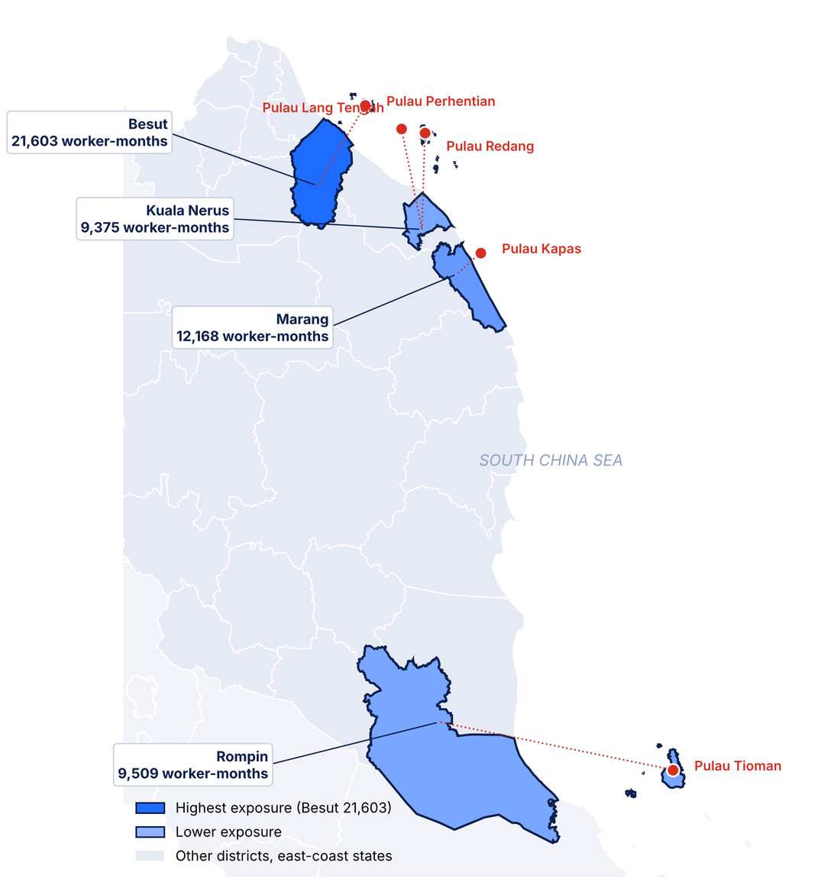
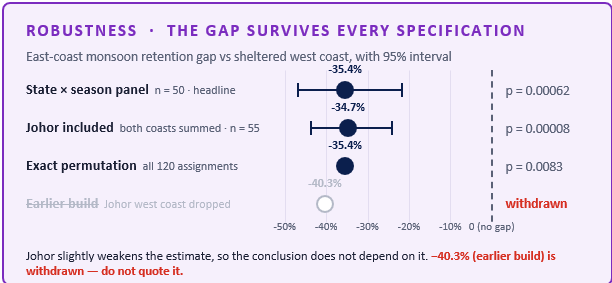
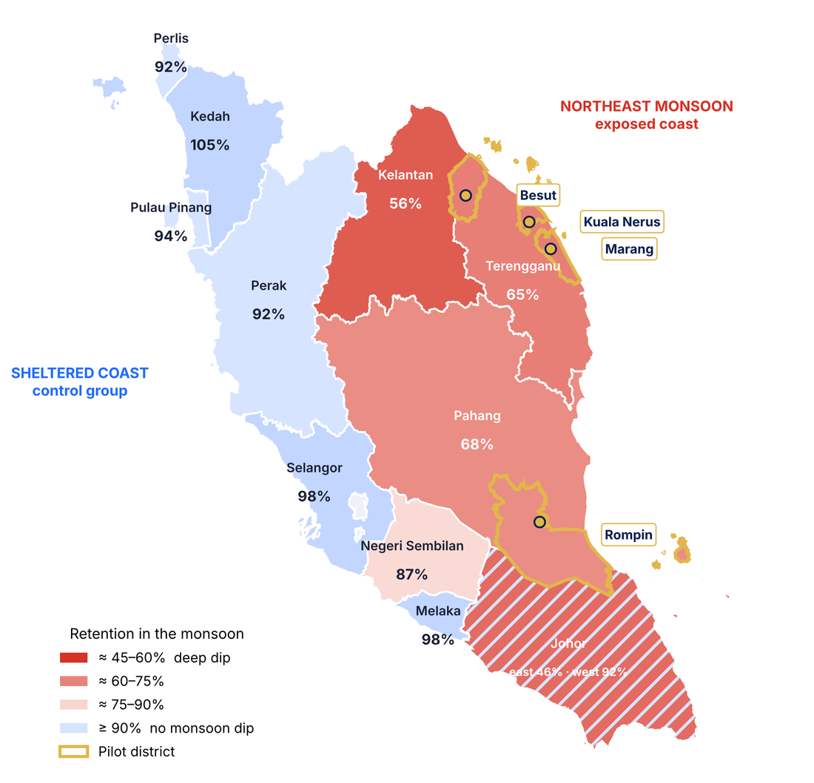

DOSM Datathon 2026, final round. Team DATAVENGERS, Universiti Malaya.
MONSUNBRIDGE
The monsoon is predictable. So is the plan.
Every November the Northeast Monsoon closes the islands of Malaysia's east coast, and tourism work stops for about four months. Monsun Bridge plans that transition before the window opens: who is exposed, which work they can move to, and what it costs to cover them. Built only from open Malaysian official statistics.
Every figure above is Modelled or Scenario: not an official count, not a budget.
A plan for the months the islands close.
Monsun Bridge is a planning tool for state and district planners. It takes the monsoon window that METMalaysia already publishes and turns it into a plan a district can budget, with every number stating whether it was measured or assumed.
- Core cohort
Seasonal tourism workers
13,703 in the planning cohort: boat operators, dive and snorkel crew, homestay and island-vendor staff.
- Trust mechanism
Four-grade evidence ledger
Every figure on every page declares Observed, Derived, Modelled or Scenario.
- Scope
Four east-coast districts
Besut, Marang and Kuala Nerus in Terengganu, and Rompin in Pahang.
Team DATAVENGERS, Universiti Malaya.
Four students from the Faculty of Computer Science and Information Technology, supervised by Associate Professor Dr Norjihan binti Abdul Ghani of the Department of Information Systems.
Everyone knows the date. No one has a plan.
known in advance
Illustrative timeline for east-coast island destinations. Closure dates vary by island and year.
Monsun Bridge helps districts plan livelihood support before seasonal closures.
13,703 tourism-linked workers are exposed to the monsoon closure.
- Where
- 4 districts: Besut, Marang, Kuala Nerus and Rompin
- How much
- 52,655 worker-months of estimated exposure
- How big
- 0.392% of Malaysia's tourism jobs: small enough to pilot, large enough to matter
What they need
Workers need to know where the work goes, before November.
Districts need to know who is exposed, for how long, and at what cost.
Both need one shared record, with the source of every number shown.
Source, year, method and evidence grade for each figure are set out in the method chapters below.
Five islands close. Four districts carry the cost.
Four districts, five islands, one published date.

| District | Island that closes | Workers | Worker-months |
|---|---|---|---|
| Besut | Pulau Perhentian | 4,944 | 21,603 |
| Marang | Pulau Kapas | 3,276 | 12,168 |
| Rompin | Pulau Tioman | 2,418 | 9,509 |
| Kuala Nerus | Pulau Redang, Lang Tengah | 3,065 | 9,375 |
| Total | 13,703 | 52,655 |
Workers are tourism-linked and modelled. Modelled
52,655 worker-months inside a 133-day window dated by METMalaysia. The window is geographic; the count is occupational.
Not a tourism forecast. A costed transition.
The objective was to convert a shock a national authority already dates in advance into a plan a district can budget, and to state, for every figure, whether it was measured or assumed.
Measure
Exposure in worker-months
Not ringgit. Malaysia publishes no register of tourism workers and no measure of their income loss, so we count the quantity we can actually observe.
Test
The intuitive answer
Does fishing hedge a monsoon tourism closure? Test it properly, against a control coast, before recommending it to anyone.
Match
Workers to destinations
Using official MASCO occupational task text rather than expert opinion, and showing the exact contribution of every scoring component.
Cost
A programme a planner can set
Participation, training months, support months and unit cost are controls on the page, not assertions in a paragraph.
Who uses it, and when
| User | Decision it supports | When |
|---|---|---|
| State planners (State EPU) | Where to prioritise, how much to budget | Before November |
| District officers | Which workers to verify | 8–10 weeks before |
| HRD Corp, MOTAC and employers | Which pathways and vacancies to validate | 6–8 weeks before |
| DOSM | A reusable exposure indicator | Every quarter |
Every input is official, open, and verifiable.
118 official records across seven datasets. The three downloaded programmatically carry a SHA-256 and a retrieval date, so a judge can reproduce exactly what we used.
| Dataset | Publisher | Coverage | Records | Verification | Used on |
|---|---|---|---|---|---|
| DOSM Domestic Tourism Survey | DOSM | Quarterly, Malaysia | 8 | Transcribed from the published release | Monsoon clock |
| Northeast Monsoon Review | METMalaysia | Season, Malaysia | 3 | Transcribed from the published review | Monsoon Share |
| Principal Labour Force by District | DOSM, data.gov.my | Annual, district | 1,116 | SHA-256 a29fb0bc34… retrieved 2026-09-14 | Workforce denominator |
| Household Income by District | DOSM, data.gov.my | Periodic, district | 480 | SHA-256 538054fb76… retrieved 2026-09-14 | Income exposure |
| Monthly Marine Fish Landings | DOF, data.gov.my | Monthly, state | 1,368 | SHA-256 bacbb05957… retrieved 2026-09-14 | West-coast control |
| MASCO 2020 task descriptions | Ministry of Human Resources | Classification | 78 | Task text quoted verbatim | Occupation corpus |
| Tourism Satellite Account 2024 | DOSM | Annual, Malaysia | 4 | Transcribed from the published release | National anchoring |
Official records across seven open datasets, every one traceable to a published source
Datasets carry a SHA-256 checksum and a retrieval date, so the exact bytes can be verified
Fabricated, simulated or synthetic values anywhere in the project
What we refused to invent. Malaysia publishes no register of tourism workers and no measure of their income loss. Inventing one was the fastest way to a false number. So we measure exposure in worker-months. What cannot be measured is withheld, or exposed as a control the reader moves.
Four grades. One weighting device. No hidden assumptions.
How a published date becomes a statistical weight.
A published official value
Or MASCO task text quoted verbatim.
The 2024/25 window ran 133 days.
A formula or test over observed inputs
The formula and period are always stated.
Monsoon Share is 0.93 for Q1 2025.
A planning output on declared assumptions
Never an official count, budget or commitment.
The 13,703-worker planning cohort.
A parameter the reader sets
Move the slicer and the number moves with it.
RM 887 per worker-month.
Monsoon Share: how quarterly statistics speak to a mid-November window
Red = days inside the published window. The 2024/25 window ran 133 days; the reviewed METMalaysia windows run 133 to 138.
The grade is the colour, not a caption. The same four hues run across all eight dashboard pages, so a reader sees that RM 887 is reader-set and the 133-day window observed, without reading a caption.
Worker-month exposure, 52,655 across four districts
WME = employment × tourism planning share × dependency weight × exposure months
Modelled Employment is Observed; planning share and dependency weight are declared assumptions. Besut alone carries 41%.
A score you can decompose, not a black box.
| Component | Weight | What it measures |
|---|---|---|
| Task similarity | +0.40 | Cosine between source and destination MASCO task corpora, on SVD-reduced vectors |
| Geographic access | +0.20 | Whether the destination is reachable from the worker's own district |
| Seasonal fit | +0.20 | Whether the destination sits off the monsoon-exposed surface |
| Sector capacity | +0.10 | A proxy for absorption. Not vacancies: we have none, and we say so |
| Training gap | −0.10 | Months of bridging ÷ 3, set to max(0.5, 3(1 − similarity)), so it is not independent of similarity |
What the model sees: cosine similarity on MASCO task text
| Marine ops | Coastal safety | Heritage guide | Guest service | Market sales | Coastal fishery | Fish processing | Aquaculture | |
|---|---|---|---|---|---|---|---|---|
| Boat operator | 0.96 | 0.06 | 0.14 | 0.00 | 0.00 | 0.00 | 0.02 | 0.00 |
| Dive instructor | 0.08 | 0.90 | 0.00 | 0.05 | 0.01 | 0.00 | 0.00 | 0.31 |
| Homestay operator | 0.06 | 0.01 | 0.19 | — | 0.00 | 0.01 | 0.00 | 0.03 |
| Snorkel guide | 0.00 | 0.46 | — | 0.00 | 0.01 | 0.10 | 0.00 | 0.00 |
| Tourism vendor | 0.03 | 0.01 | 0.00 | 0.08 | — | 0.01 | 0.02 | 0.06 |
Fishing columns stay low for every source (max 0.31): the model does not send boat operators to sea; the rule removes what little weight remains. A dash marks the same MASCO unit group, dropped. 13 documents, 417 terms, 8 SVD components (70.5%), seed 42.
Where the ranking sends a Besut boat operator, and where it refuses to
Without the rule
of this worker's allocation would go to the three red rows (28–41% across all 20 worker groups).
Two guardrails
- Seasonal exclusion. Co-seasonal fishing pathways receive zero allocation. Processing and aquaculture are also excluded as a precaution.
- Vacancy verification. Rankings are not job offers. Employers must confirm vacancies before participants are enrolled.
A boat operator in Besut. The jetty closes in November. What now?
The obvious option is the one we test first.
Wait it out
Savings run down; debt is carried into next season.
No income for four months
Go to the mainland
Odd jobs, construction, far from family.
Untracked and unplanned
Go fishing
Same boat, same sea. The natural move, and what any planner would suggest.
The only option with monthly official data. Without a rule, about 1 in 3 of the allocation would still land here.
A planned pathway
Marine operations, coastal safety, heritage guiding: matched to what he already knows.
What Monsun Bridge is built to find
How we score a pathway: five parts, weighted and added up
Worked example: boat operator to Marine Operations Assistant, Besut
Runner-up 0.34
Scale 0 to 0.8. Every number is exact and shown: no black box.
Why test fisheries first? Without seasonal exclusions, 28% of this worker group's modelled allocation goes to fishing, processing or aquaculture. We therefore examined fisheries seasonality before funding these pathways.
“Go fishing” is the wrong advice. The data says so twice.
We compared the east coast against the west coast as a control: same economy, same fuel prices, same fleet rules, but sheltered from the monsoon. Ten states, twelve months, five seasons.
Landings retained inside the monsoon window, as a share of non-monsoon months, mean of five seasons. Gap 95% CI −46.8% to −21.7%. Derived
| Test | Design | n | p (two-sided) | Verdict |
|---|---|---|---|---|
| State × season panel | Difference-in-differences, season fixed effects, state-clustered SE | 50 | 0.00062 | Rejected at 1% |
| Exact permutation test | All 120 ways 3 of 10 states could be labelled east | 120 | 0.00833 | Rejected: the design floor |
| Coast-pair Wilcoxon | Five matched season pairs | 5 | 0.0625 | Not rejected: the n = 5 floor |
| Per-state Mann-Whitney | Terengganu and Pahang, 2023 landings | 12 | 0.0025 | Perfect separation, U = 0 |
Lead with 0.0083, not 0.00062
Three treated clusters make cluster-robust SE anti-conservative: the smaller p is the weaker evidence.

What the rule changes for one worker's allocation
Marine fisheries share the monsoon; they do not hedge it. Every co-seasonal destination gets allocation weight 0.0000: the system refuses the intuitive answer. Pushing labour into stressed fleets is ineffective and environmentally unhelpful.
Fishing also slows during the tourism off-season.
Could fishing provide work during the tourism off-season? The landings say no.
When: seasonal profile by coast, 2018–2023
Each month's landings ÷ that coast's mean month in the same year, averaged over six years. 1.0 = an average month. Shaded = November to March.
December to January: east-coast landings fall to about half an average month. The west coast never leaves 0.94–1.07. Observed
Where: monsoon-month landings as a share of non-monsoon

Kelantan, Terengganu and Pahang keep 56–68% of non-monsoon levels; sheltered states keep 87–105%. Boundaries: DOSM. Observed
Alternative livelihoods must stay viable during the monsoon, not simply use similar skills. That is the test the Skill Bridge applies.
RM 315.5M at stake. RM 887 to cover a worker-month.
Household income exposed
Workers in the planning cohort
Cost per worker-month covered
Placement rate at which the programme breaks even
| District | State | Employed | Tourism-linked | Worker-months | Median household income | Priority index |
|---|---|---|---|---|---|---|
| Besut | Terengganu | 61,800 | 4,944 | 21,603 | RM 5,820 | 87.5, higher |
| Marang | Terengganu | 46,800 | 3,276 | 12,168 | RM 6,246 | 57.6, moderate |
| Rompin | Pahang | 40,300 | 2,418 | 9,509 | RM 4,760 | 70.0, higher |
| Kuala Nerus | Terengganu | 61,300 | 3,065 | 9,375 | RM 7,304 | 35.7, lower |
| Total | 210,200 | 13,703 | 52,655 |
The default scenario
20% participation, 1 training month, 2 support months, RM 1,100 a month
2,741 participants, RM 7.30M
8,223 worker-months at RM 887 each
All graded Modelled (Scenario). Move a slicer on dashboard page 04 and they move together.
The arithmetic
cost per participant = (1 × 1,100 + 2 × 1,100 × 0.60) × 1.10 = RM 2,662
The stipend sits at 60% of the training rate, administration at 10% of the two. 2,741 × RM 2,662 = RM 7.30M. The full unit rate on all three months would give RM 9.05M; we show the factor so the headline reconciles.
An upper bound. RM 315.5M assumes one worker per household. Coverage costs about a third of a month's wage.
We publish the failures. That is the contribution.
Model selection runs on rolling-origin folds inside 2018–2022. 2023 is scored exactly once, afterwards. The test year cannot both choose the model and measure it: an earlier version of this work made that mistake and we corrected it.
| Configuration | Selected | CV rel. MAE | Rel. MAE on 2023 | p vs naive | Verdict |
|---|---|---|---|---|---|
| Nowcast, one month ahead (lag-1 available) | ridge | 0.992 | 0.731 | 0.004 | Beats the seasonal-naive benchmark |
| Pre-season forecast (lag-1 not available) | gbr | 1.026 | 1.050 | 0.465 | Does not beat seasonal naive |
Perturbing every scoring weight by ±25% and ±50% changes no recommendation.
Lowering the shore seasonal-fit analyst setting by 25% moves four. Stability falls to 80%.
Index withdrawn: a counter-seasonality measure divided by a ratio of 1.005, an artefact.
Top-ranked pathways that change, out of 20
Weights never flip a recommendation; the analyst settings behind them do. The 4 that move are top-ranked pathways, not final allocations: the seasonal exclusion still blocks the destinations it blocks. That is where the uncertainty lives, and we show it.
Three qualifications on these numbers
Nowcast 0.731 relative MAE, 0.745 MASE. Pre-season 1.050 and 1.070, against seasonal naive = 1.0.
Terengganu 0.534, Pahang 0.809, Kelantan 0.869. The pooled test suggests an advantage (n = 36, p = 0.004); the state-clustered test does not (3 clusters, not significant).
The test used a fixed November to March mask. The sign holds under every mask; the magnitude does not.
Eight pages. One argument. Yours to drive.
The full dashboard, running in your browser with the same tables and the same formulas as the Power BI file. Change a slicer, click a bar or a table row, switch pages along the bottom: every number recalculates.
On a phone? Tap Open full screen and turn it sideways.
No new data collection. No new agency.
It runs on institutions that already exist. Every phase is timed against the monsoon window.
of national tourism employment. The four pilot districts are a starting scope, not a limit: the method is the contribution.
Why it can actually be run. Every institution in the six-phase cycle already exists and publishes. DOSM refreshes the indicators quarterly, the state planning unit sets the parameters, HRD Corp and MOTAC confirm the courses. Placement is measured after the window closes and fed back into the next season's parameters, so the model improves on observed outcomes rather than on assumptions.
Decent work and economic growth
Decent work protected through a predictable, annually recurring interruption, with the cost stated rather than assumed and the break-even published rather than promised.
Life below water, and we did not expect this one
Do not push displaced labour into fisheries when fleets are already under stress: economically ineffective, environmentally unhelpful, and the model refuses it.
The only new thing is the instrument that joins them: an eight-page Power BI file that opens with no database, no API key and no internet connection.
Start in Besut. Validate. Expand.
A proposed rollout, with expansion based on measured pilot outcomes.
Stage 1, indicative season 2026/27
Besut pilot
100 proposed participants, RM 266,200 indicative budget. Verify workers, employer vacancies and training; record placements, months worked and wages.
Stage 2, indicative season 2027/28
Four-district rollout
Besut, Marang, Kuala Nerus and Rompin. Modelled planning cohort 13,703 workers; at 20% participation about 2,741 participants; indicative programme cost RM 7.30M.
Stage 3, indicative season 2028/29 onward
Wider adoption
Extend to suitable districts with available official data. Verify local seasonal needs and employer demand. Recalibrate assumptions and evaluate each expansion.
Everyone, the four districts, and the pilot.
People-based reach, adapted from the TAM / SAM / SOM market-sizing frame. Not software revenue, not confirmed demand.
The widest circle: the national tourism employment base. A contextual ceiling only. The monsoon-affected subset of it has not been measured, and no national figure is claimed.
Besut, Marang, Kuala Nerus and Rompin: tourism-linked workers with measurable worker-month exposure (52,655 worker-months). Not yet verified or served.
The first cohort, if partners agree. Expansion to the four districts (about 2,741 at 20% uptake, RM 7.30M indicative) only after the pilot passes its gate.
TAM / SAM / SOM are adapted here to beneficiary reach, not to revenue. Circles are illustrative, not to scale. Every figure keeps its evidence grade.
MONSUNBRIDGE
DATAVENGERS, IPTA-093, Universiti Malaya
Howard Woon Hao Zhe, Leow Shen En, Wong En Sheng and Ling Jing Jie
Advisor: Associate Professor Dr Norjihan binti Abdul Ghani, Department of Information Systems
Dashboard pages and visuals, all live, with 11 reading panels on the canvas itself
Official Malaysian records across seven open datasets
Fabricated, simulated or synthetic values anywhere
Pages of written report, within the 25-page cap
Thank you.